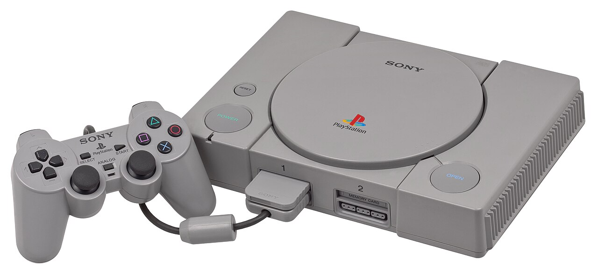
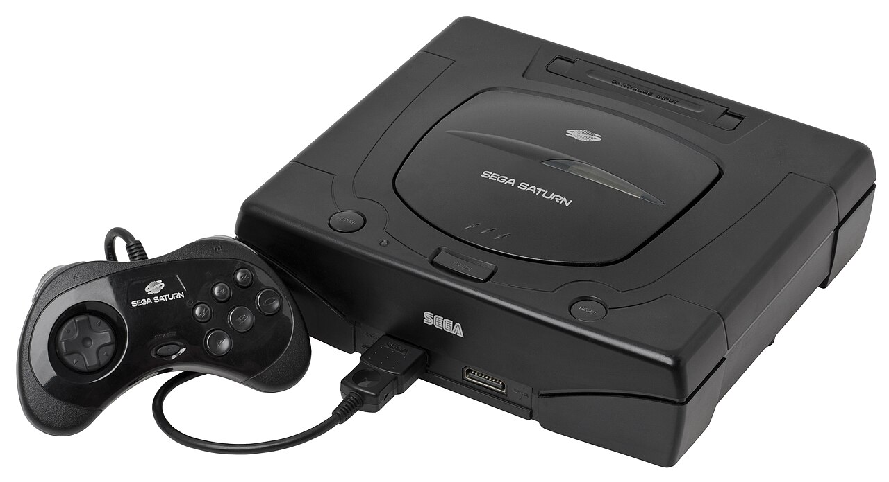
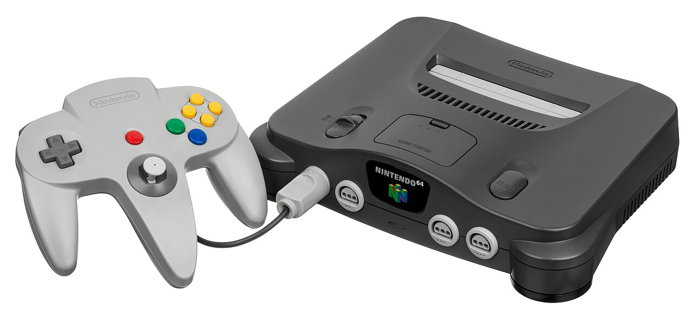

Era PS1: o salto para o 3D
Em meados dos anos 90, os jogos migraram dos cartuchos 2D para o 3D em CD. Foi a primeira grande disputa entre PlayStation, Sega Saturn e Nintendo 64.
PlayStation (PS1) (1994)
Coloque aqui a foto:

(sugestão: Wikimedia Commons, anotando a fonte)
Lançado pela Sony, apostou nos CDs, que eram baratos e guardavam muito mais dados. Isso atraiu muitos estúdios e deu início a uma das maiores marcas dos games.
Jogos que marcaram
- Final Fantasy VII
- Metal Gear Solid
- Resident Evil
- Crash Bandicoot
Oque o PlayStation (PS1) significou:O PlayStation (PS1) representou uma das maiores transformações da história dos videogames. Lançado em 1994 no Japão e em 1995 em outros mercados importantes, o primeiro console da Sony ajudou a popularizar os jogos em 3D, consolidou o uso de CDs nos consoles e mudou a maneira como os jogos eram desenvolvidos, apresentados e consumidos. Mais do que um avanço tecnológico, ele marcou a entrada de uma nova fase na indústria, tornando os videogames cada vez mais presentes na cultura popular.
Sega Saturn (1994)
Coloque aqui a foto:

(sugestão: Wikimedia Commons, anotando a fonte)
Rival direto do PS1, foi forte no Japão e tinha ótimos jogos de arcade, mas não conseguiu competir com a Sony no resto do mundo.
Jogos que marcaram
- Nights into Dreams
- Virtua Fighter 2
- Panzer Dragoon
Oque o Sega Saturn significou:O Sega Saturn representou a ambição da Sega de liderar a nova era dos videogames, marcada pela transição para os gráficos tridimensionais. Lançado em 1994 no Japão, o Saturn foi desenvolvido para oferecer experiências avançadas, especialmente em jogos de arcade e títulos com gráficos 2D. Apesar de possuir um hardware poderoso para sua época, sua arquitetura complexa e decisões comerciais da Sega dificultaram seu desempenho em um mercado cada vez mais competitivo.
Nintendo 64 (1996)
Coloque aqui a foto:

(sugestão: Wikimedia Commons, anotando a fonte)
Manteve os cartuchos, que eram mais rápidos, porém limitados em espaço. Ficou marcado pelo controle com analógico e pelo multiplayer para até 4 pessoas.
Jogos que marcaram
- Super Mario 64
- The Legend of Zelda: Ocarina of Time
- GoldenEye 007
Oque o Nintendo 64 significou:O Nintendo 64 representou um dos passos mais importantes na consolidação dos videogames tridimensionais, levando experiências em 3D para um público ainda maior. Lançado em 1996 no Japão e em outros mercados nos anos seguintes, o console da Nintendo apostou em um hardware capaz de proporcionar mundos tridimensionais, movimentação mais livre e novas formas de interação. Em uma época em que a indústria estava redefinindo o que os videogames poderiam oferecer, o Nintendo 64 ajudou a estabelecer novas referências para a jogabilidade e o design de jogos.